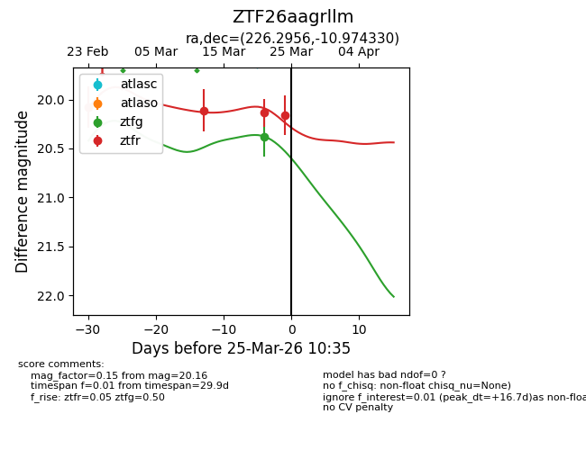
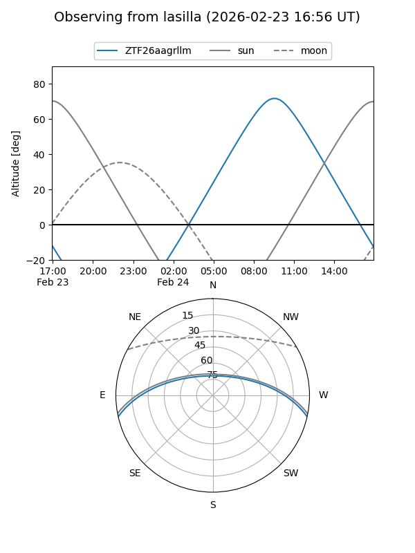
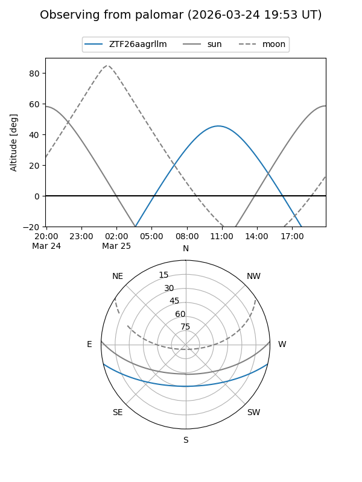
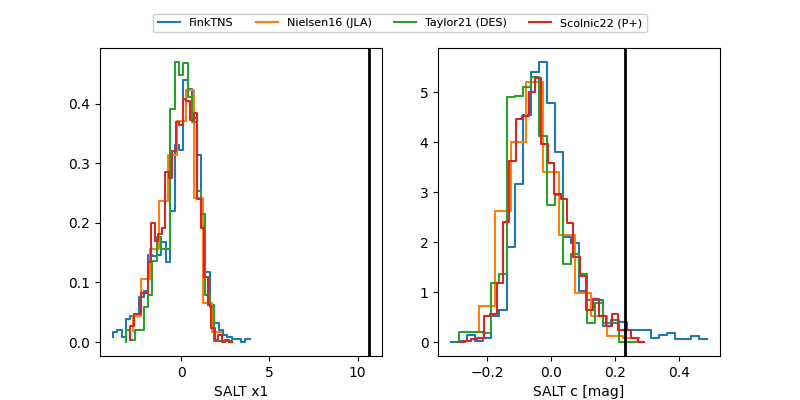

ZTF26aagrllm
Target ZTF26aagrllm at 2026-03-25 10:38
Aliases and brokers:
FINK: link
Lasair: link
ALeRCE: link
alt names
ZTF26aagrllm (ztf,fink_ztf)
Coordinates:
equatorial (ra, dec) = 226.2956,-10.97433
equatorial (HMS+DMS) = 15:05:10.95,-10:58:27.59
galactic (l, b) = (347.8233,+39.96415)
Flags:
Photometry:
last ztfg=20.38, ztfr=20.16
1 ztfg, 4 ztfr detections
Lightcurve

Visibility


Additional plots
